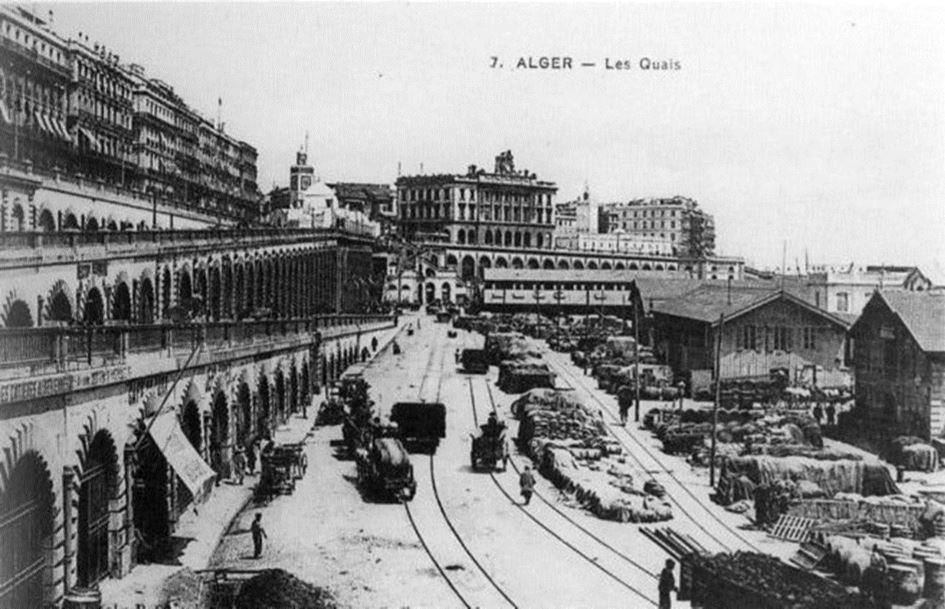

Quand Arte apporte sa pierre à l’escroquerie historique de la « légende noire » de la colonisation
par Bernard LUGAN
La chaîne Arte vient de se surpasser dans le commerce de l’insupportable escroquerie historique qu’est la « légende noire » de la colonisation. Or, le bilan colonial ne pourra jamais être fait avec des invectives, des raccourcis, des manipulations et des mensonges.
Regardons la réalité bien en face : la colonisation ne fut qu’une brève parenthèse dans la longue histoire de l’Afrique. Jusque dans les années 1880, et cela à l’exception de l’Algérie, du Cap de Bonne Espérance et de quelques comptoirs littoraux, les Européens s’étaient en effet tenus à l’écart du continent africain. Le mouvement des indépendances ayant débuté durant la décennie 1950, le XXe siècle a donc connu à la fois la colonisation et la décolonisation.
Quel bilan honnête est-il possible de faire de cette brève période qui ne fut qu’un éclair dans la longue histoire de l’Afrique ? Mes arguments sont connus car je les expose depuis plusieurs décennies dans mes livres, notamment dans Osons dire la vérité à l’Afrique1. J’en résume une partie dans ce communiqué.
1) Les aspects positifs de la colonisation pour les Africains
LA COLONISATION APPORTA LA PAIX
Durant un demi-siècle, les Africains apprirent à ne plus avoir peur du village voisin ou des razzias esclavagistes. Pour les peuples dominés ou menacés, ce fut une véritable libération.
Dans toute l’Afrique australe, les peuples furent libérés de l’expansionnisme des Zulu, dans tout le Sahel, les sédentaires furent libérés de la tenaille prédatrice Touareg-Peul, dans la région tchadienne, les sédentaires furent débarrassés des razzias arabo-musulmanes, dans l’immense Nigeria, la prédation nordiste ne s’exerça plus aux dépens des Ibo et des Yoruba, cependant que dans l’actuelle Centrafrique, les raids à esclaves venus du Soudan cessèrent etc.
A l’évidence, et à moins d’être d’une totale mauvaise foi, les malheureuses populations de ces régions furent clairement plus en sécurité à l’époque coloniale qu’aujourd’hui…
LA COLONISATION N’A PAS PILLÉ L’AFRIQUE
Durant ses quelques décennies d’existence la colonisation n’a pas pillé l’Afrique. La France s’y est même épuisée en y construisant 50.000 km de routes bitumées, 215.000 km de pistes toutes saisons, 18.000 km de voies ferrées, 63 ports équipés, 196 aérodromes, 2000 dispensaires équipés, 600 maternités, 220 hôpitaux dans lesquels les soins et les médicaments étaient gratuits.
En 1960, 3,8 millions d’enfants étaient scolarisés et dans la seule Afrique noire, 16.000 écoles primaires et 350 écoles secondaires collèges ou lycées fonctionnaient. En 1960 toujours 28.000 enseignants français, soit le huitième de tout le corps enseignant français exerçaient sur le continent africain.
Pour la seule décennie 1946 à 1956, la France a, en dépenses d’infrastructures, dépensé dans son Empire, donc en pure perte pour elle, 1400 milliards de l’époque. Cette somme considérable n’aurait-elle pas été plus utile si elle avait été investie en métropole ? En 1956, l’éditorialiste Raymond Cartier avait d’ailleurs écrit à ce sujet :
« La Hollande a perdu ses Indes orientales dans les pires conditions et il a suffi de quelques années pour qu'elle connaisse plus d'activité et de bien-être qu’autrefois. Elle ne serait peut-être pas dans la même situation si, au lieu d’assécher son Zuyderzee et de moderniser ses usines, elle avait dû construire des chemins de fer à Java, couvrir Sumatra de barrages, subventionner les clous de girofle des Moluques et payer des allocations familiales aux polygames de Bornéo. »
Et Raymond Cartier de se demander s’il n’aurait pas mieux valu « construire à Nevers l’hôpital de Lomé et à Tarbes le lycée de Bobo-Dioulasso ».
Jacques Marseille2 a quant à lui définitivement démontré que l’Empire fut une ruine pour la France. L’État français dût en effet se substituer au capitalisme qui s’en était détourné et s’épuisa à y construire ponts, routes, ports, écoles, hôpitaux et à y subventionner des cultures dont les productions lui étaient vendues en moyenne 25 % au-dessus des cours mondiaux. Ainsi, entre 1954 et 1956, sur un total de 360 milliards de ff d’importations coloniales, le surcoût pour la France fut de plus de 50 milliards.
Plus encore, à l’exception des phosphates du Maroc, des charbonnages du Tonkin et de quelques productions sectorielles, l’Empire ne fournissait rien de rare à la France. C’est ainsi qu’en 1958, 22% de toutes les importations coloniales françaises étaient constituées par le vin algérien qui était d’ailleurs payé 35 ff le litre alors qu’à qualité égale le vin espagnol ou portugais était à19 ff.
Quant au seul soutien des cours des productions coloniales, il coûta à la France 60 milliards par an de 1956 à 1960.
DURANT LA PÉRIODE COLONIALE, LES AFRICAINS VIVAIENT EN PAIX
Dans la décennie 1950, à la veille des indépendances, à l’exception de quelques foyers localisés (Madagascar, Mau-Mau, Cameroun) l’Afrique sub-saharienne était un havre de paix.
Le monde en perdition était alors l’Asie qui paraissait condamnée par de terrifiantes famines et de sanglants conflits : guerre civile chinoise, guerres de Corée, guerres d’Indochine et guerres indo-pakistanaises.
En comparaison, durant la décennie 1950-1960, les habitants de l'Afrique mangeaient à leur faim, étaient gratuitement soignés et pouvaient se déplacer le long de routes ou de pistes entretenues sans risquer de se faire attaquer et rançonner.
Soixante-dix ans plus tard, le contraste est saisissant : du nord au sud et de l'est à l'ouest, le continent africain est meurtri :
- Dans le cône austral, ce qui fut la puissante Afrique du Sud sombre lentement dans un chaos social duquel émergent encore quelques secteurs ultra-performants cependant que la criminalité réduit peu à peu à néant la fiction du « vivre ensemble ».
- De l'atlantique à l'océan indien, toute la bande sahélienne est enflammée par un mouvement à la fois fondamentaliste et mafieux dont les ancrages se situent au Mali, dans le nord du Nigeria et en Somalie.
- Plus au sud, la Centrafrique a explosé cependant que l'immense RDC voit ses provinces orientales mises en coupe réglée par les supplétifs de Kigali ou de Kampala.
Si nous évacuons les clichés véhiculés par les butors de la sous-culture journalistique, la réalité est que l’Afrique n’a fait que renouer avec sa longue durée historique précoloniale. En effet, au XIX° siècle, avant la colonisation, le continent était déjà confronté à des guerres d’extermination à l’est, au sud, au centre, à l’ouest. Et, redisons-le en dépit des anathèmes, ce fut la colonisation qui y mit un terme.
Aujourd’hui, humainement, le désastre est total avec des dizaines de milliers de boat people qui se livrent au bon vouloir de gangs qui les lancent dans de mortelles traversées en direction de la « terre promise » européenne. Les crises alimentaires sont permanentes, les infrastructures de santé ont disparu comme l'a montré la tragédie d'Ébola en Afrique de l'Ouest ou la flambée de peste à Madagascar, l'insécurité est généralisée et la pauvreté atteint des niveaux sidérants.
Économiquement, et à l’exception d’enclaves dévolues à l’exportation de ressources minières confiées à des sociétés transnationales sans lien avec l’économie locale, l’Afrique est aujourd’hui largement en dehors du commerce, donc de l’économie mondiale, à telle enseigne que sur 52 pays africains, 40 ne vivent aujourd’hui que de la charité internationale
2) Les conséquences négatives de la colonisation
LA COLONISATION A DÉSTABILISÉ LES ÉQUILIBRES DÉMOGRAPHIQUES AFRICAINS
La colonisation a mis un terme aux famines et aux grandes endémies. Résultat du dévouement de la médecine coloniale, la population africaine a été multipliée par 8, une catastrophe dont l’Afrique aura du mal à se relever.
En effet, le continent africain qui était un monde de basses pressions démographiques n’a pas su « digérer » la nouveauté historique qu’est la surpopulation avec toutes ses conséquences : destruction du milieu donc changements climatiques, accentuation des oppositions entre pasteurs et sédentaires, exode rural et développement de villes aussi artificielles que tentaculaires, etc.
LA COLONISATION A DONNÉ LE POUVOIR AUX VAINCUS DE L’HISTOIRE AFRICAINE
En sauvant les dominés et en abaissant les dominants, la colonisation a bouleversé les rapports ethno-politiques africains. Pour établir la paix, il lui a en effet fallu casser les résistances des peuples moteurs ou acteurs de l’histoire africaine.
Ce faisant, la colonisation s’est essentiellement faite au profit des vaincus de la « longue durée » africaine venus aux colonisateurs, trop heureux d’échapper à leurs maîtres noirs. Ils furent soignés, nourris, éduqués et évangélisés. Mais, pour les sauver, la colonisation bouleversa les équilibres séculaires africains car il lui fallut casser des empires et des royaumes qui étaient peut-être des « Prusse potentielles ».
LA DÉCOLONISATION S’EST FAITE TROP VITE
Ne craignons pas de le dire, la décolonisation qui fut imposée par le tandem Etats-Unis-Union Soviétique, s’est faite dans la précipitation et alors que les puissances coloniales n'avaient pas achevé leur entreprise de « modernisation ».
Résultat, des États artificiels et sans tradition politique ont été offerts à des « nomenklatura » prédatrices qui ont détourné avec régularité tant les ressources nationales que les aides internationales. Appuyées sur l’ethno-mathématique électorale qui donne automatiquement le pouvoir aux peuples dont les femmes ont eu les ventres les plus féconds, elles ont succédé aux colonisateurs, mais sans le philanthropisme de ces derniers…
LES VRAIES VICTIMES DE LA COLONISATION SONT LES EUROPÉENS
Les anciens colonisateurs n’en finissent plus de devenir « la colonie de leurs colonies » comme le disait si justement Edouard Herriot. L’Europe qui a eu une remarquable stabilité ethnique depuis plus de 20.000 ans est en effet actuellement confrontée à une exceptionnelle migration qui y a déjà changé la nature de tous les problèmes politiques, sociaux et religieux qui s’y posaient traditionnellement.
Or, l’actuelle politique de repeuplement de l’Europe est justifiée par ses concepteurs sur le mythe historique de la culpabilité coloniale. À cet égard, la chaîne Arte vient donc d’apporter sa pierre à cette gigantesque entreprise de destruction des racines ethniques de l’Europe qui porte en elle des événements qui seront telluriques.
2. Jacques Marseille, Empire colonial et capitalisme français, histoire d’un divorce. Paris, 1984. Dans ce livre Marseille évalue le vrai coût de l’Empire pour la France.
Retrouvez toutes les analyses de Bernard Lugan sur son blog :

Partager cette page